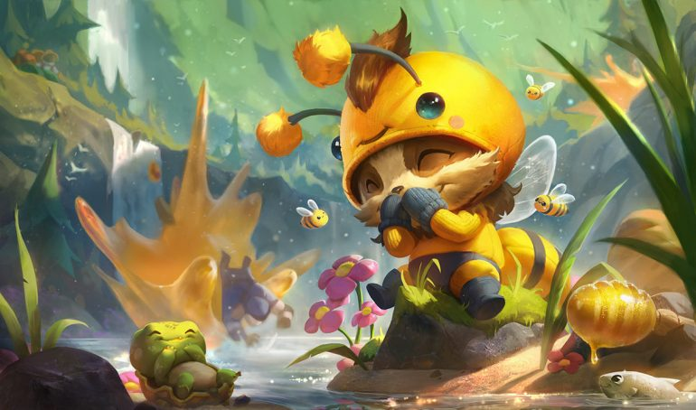

TITULO RANDOM
Armado y Preparado
Teemo no se inmuta ante los obstáculos más peligrosos y amenazadores mientras explora el mundo con un entusiasmo infinito y un espíritu lleno de alegría. Es un yordle con una moralidad inquebrantable que se enorgullece de seguir el código de los exploradores de Bandle, a veces con tanto ímpetu que no se percata de las consecuencias de sus acciones. Aunque algunos dicen que la existencia de los exploradores es cuestionable, algo es seguro: no hay que meterse con la convicción de Teemo.
Skills del personaje
Pasiva: Guerra de Guerrillas. Si Teemo se queda quieto y no hace nada durante unos instantes, se vuelve invisible de manera indefinida. Si está en la maleza, Teemo puede hacerse invisible y mantener este estado mientras se mueve. Tras abandonar la invisibilidad, Teemo consigue el factor sorpresa y aumenta su velocidad de ataque durante unos pocos segundos.
- Cegador: Nubla la visión del enemigo con un potente veneno, infligiendo daño y cegando a la unidad objetivo mientras dure el efecto.
- Movimiento Rapido: Teemo se mueve a toda velocidad, lo que aumenta de forma pasiva su velocidad de movimiento hasta que es alcanzado por un campeón o una torreta enemigos. Teemo puede esprintar para obtener una bonificación momentánea de velocidad de movimiento que no se pierde aunque lo golpeen.
- Tiro Toxico: Cada ataque de Teemo envenena al objetivo, causándole daño de impacto cada segundo durante 4 s.
- Trampa Ponzoñosa: Teemo lanza una trampa venenosa explosiva utilizando una de las setas que lleva en su mochila. Si un enemigo la pisa, suelta una nube venenosa que reduce la velocidad de los enemigos y los daña durante un tiempo. Si Teemo lanza una seta encima de otra, esta rebotará y tendrá alcance adicional.